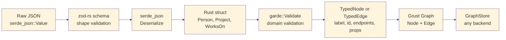
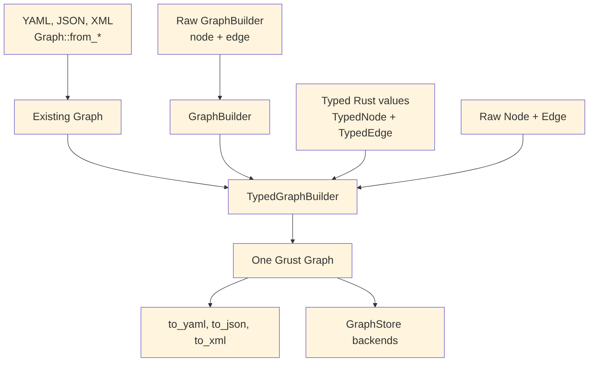

The core Graph, Node, and Edge
types are intentionally dynamic. A node has a label and a property map;
an edge has a label, endpoints, and a property map. That dynamic shape
is the right interchange format for backends, graph documents, audits,
and cross-system movement. Application code, however, often starts with
typed Rust structs: a Person, a Project, a
WorksOn relationship, or some domain-specific event.
Grust’s typed ingestion layer connects those two worlds.
The typed layer is optional. It is enabled through Cargo features:
[dependencies]
grust = { package = "grust-graph", version = "0.14.0", features = ["typed-garde"] }typed-garde adds Rust-struct validation and typed
lowering. A second feature, typed-zod-rs, layers raw JSON
shape validation on top:
[dependencies]
grust = { package = "grust-graph", version = "0.14.0", features = ["typed-zod-rs"] }typed-zod-rs implies typed-garde. That
relationship matters: zod-rs checks untrusted JSON shape first, Serde
turns the JSON into Rust values, and garde checks typed domain
invariants before Grust lowers the value into a normal Node
or Edge.

The important promise is that typed ingestion does not create a
second graph model. Once validation succeeds, everything becomes the
ordinary Grust graph shape. Backends do not need to know whether a node
came from GraphBuilder, a YAML document, a typed Rust
struct, or a zod-rs-validated JSON payload.
garde is a Rust validation library built around a derive
macro. You attach validation rules to fields, derive
garde::Validate, and then call validate() or
validate_with(...). The rules live near the Rust type, so
they travel with the domain model instead of being hidden in a loader
function.
Common garde rules include:
length(min = 1) for nonempty strings and
collections.range(min = 1, max = 100) for numeric bounds.inner(...) for validating items inside a
collection.custom(...) for domain-specific validation
functions.dive for validating nested values that also implement
Validate.In Grust, a typed node implements TypedNode. It supplies
a graph label and a stable node id. The default property conversion
serializes the struct through Serde and converts the resulting object
fields into Grust properties:
use grust::prelude::*;
use grust::typed::garde;
use serde::Serialize;
#[derive(Debug, Serialize, garde::Validate)]
#[garde(allow_unvalidated)]
struct Person {
#[garde(length(min = 1))]
id: String,
#[garde(length(min = 1))]
name: String,
#[garde(length(min = 1), inner(length(min = 1)))]
skills: Vec<String>,
}
impl TypedNode for Person {
const LABEL: &'static str = "Person";
fn node_id(&self) -> NodeId {
format!("person:{}", self.id).into()
}
}Typed edges implement TypedEdge. They provide a label
and endpoint ids:
#[derive(Debug, Serialize, garde::Validate)]
#[garde(allow_unvalidated)]
struct WorksOn {
#[garde(length(min = 1))]
person_id: String,
#[garde(length(min = 1))]
project_id: String,
#[garde(range(min = 1, max = 100))]
allocation_percent: u8,
}
impl TypedEdge for WorksOn {
const LABEL: &'static str = "WORKS_ON";
fn source_node_id(&self) -> NodeId {
format!("person:{}", self.person_id).into()
}
fn target_node_id(&self) -> NodeId {
format!("project:{}", self.project_id).into()
}
}TypedGraphBuilder validates and lowers these values:
let mut builder = TypedGraphBuilder::new();
builder.add_node(&Person {
id: "nia".to_string(),
name: "Nia".to_string(),
skills: vec!["rust".to_string(), "graphs".to_string()],
})?;
builder.add_edge(&WorksOn {
person_id: "nia".to_string(),
project_id: "grust".to_string(),
allocation_percent: 80,
})?;
let graph = builder.build();Validation fails before graph construction. If
allocation_percent is 0, the
range(min = 1, max = 100) rule produces a Grust schema
error and the edge is not added. This keeps invalid domain facts out of
the graph rather than relying on a backend to reject them later.
Typed values can also be reconstructed from ordinary Grust reads. The read path decodes node or edge properties back through serde, runs garde validation, and checks that the typed identity still matches the graph value:
let stored = store
.get_node(&NodeId::new("person:nia"))
.await?
.expect("person exists");
let person = Person::from_node(&stored)?;
assert_eq!(person.id, "nia");Edges follow the same pattern with
WorksOn::from_edge(&edge)?. For validation contexts,
use from_node_with or from_edge_with.
The typed layer is an ingestion layer over the ordinary
GraphBuilder. It does not force an all-or-nothing choice. A
graph can start as a document, accept raw nodes and edges, and then be
extended with typed values:
let existing = Graph::new(
vec![Node::new("Document", "doc:garde-proposal", Props::new())],
Vec::new(),
);
let mut builder = TypedGraphBuilder::from_graph(existing);
builder.add_node(&Person {
id: "nia".to_string(),
name: "Nia".to_string(),
skills: vec!["rust".to_string(), "graphs".to_string()],
})?;
builder.add_raw_edge(Edge::new(
"AUTHORED",
"person:nia",
"doc:garde-proposal",
Props::new(),
));
let graph = builder.build();The coexistence API is explicit:
TypedGraphBuilder::from_graph(graph) starts from an
existing Graph.TypedGraphBuilder::from_builder(builder) starts from an
existing GraphBuilder.add_raw_node(node) and add_raw_edge(edge)
add ordinary Grust values.into_builder() returns the inner
GraphBuilder when lower-level builder operations are
needed.
This is useful during migrations. A project can keep loading existing graph documents while adding typed definitions for the domain facts that benefit most from Rust validation. Over time, more labels can move to typed constructors without breaking the storage or document formats.
Zod is best known from TypeScript. It lets developers define a runtime schema and validate untrusted input before treating it as application data. In TypeScript, this closes an important gap: static types disappear at runtime, so a value received from JSON, an HTTP request, a form, or a message queue still needs runtime validation.
Rust has a different type system, but the boundary problem still exists. External data arrives as bytes or JSON. Serde can deserialize those bytes into a Rust struct, but it is often useful to separate two questions:
zod-rs answers the first question. garde
answers the second. Grust’s typed-zod-rs feature wires
those stages together:
use grust::prelude::*;
use serde::{Deserialize, Serialize};
use serde_json::json;
use zod_rs::prelude::{Schema, number, object, string};
#[derive(Debug, Deserialize, Serialize, garde::Validate)]
#[garde(allow_unvalidated)]
struct Person {
#[garde(length(min = 1))]
id: String,
#[garde(length(min = 1))]
name: String,
#[garde(length(min = 1), inner(length(min = 1)))]
skills: Vec<String>,
}
impl TypedNode for Person {
const LABEL: &'static str = "Person";
fn node_id(&self) -> NodeId {
format!("person:{}", self.id).into()
}
}
let person_schema = object()
.field("id", string().min(1))
.field("name", string().min(1))
.field("skills", string().min(1).array())
.strict();
let json = json!({
"id": "nia",
"name": "Nia",
"skills": ["rust", "graphs"]
});
let person: Person = parse_typed_json(&person_schema, &json)?;The same schema can feed the graph builder directly:
let mut builder = TypedGraphBuilder::new();
builder.add_node_from_json::<Person, _>(&person_schema, &json)?;For edges, the pattern is the same:
#[derive(Debug, Deserialize, Serialize, garde::Validate)]
#[garde(allow_unvalidated)]
struct WorksOn {
#[garde(length(min = 1))]
person_id: String,
#[garde(length(min = 1))]
project_id: String,
#[garde(range(min = 1, max = 100))]
allocation_percent: u8,
}
impl TypedEdge for WorksOn {
const LABEL: &'static str = "WORKS_ON";
fn source_node_id(&self) -> NodeId {
format!("person:{}", self.person_id).into()
}
fn target_node_id(&self) -> NodeId {
format!("project:{}", self.project_id).into()
}
}
let works_on_schema = object()
.field("person_id", string().min(1))
.field("project_id", string().min(1))
.field("allocation_percent", number().int().min(1.0).max(100.0))
.strict();
builder.add_edge_from_json::<WorksOn, _>(
&works_on_schema,
&json!({
"person_id": "nia",
"project_id": "grust",
"allocation_percent": 80
}),
)?;The adapter intentionally deserializes the original JSON after zod-rs
accepts it. This preserves Rust integer types. For example,
zod-rs validates numbers through a floating-point schema,
but Serde should still be allowed to decode the original JSON integer
80 into a Rust u8.
There are four common construction paths:
Raw GraphBuilder:
trusted Rust code -> Node/Edge -> Graph
Graph documents:
YAML/JSON/XML -> Graph::from_* validation -> Graph
typed-garde:
Rust struct -> garde validation -> TypedNode/TypedEdge lowering -> Graph
typed-zod-rs:
raw JSON -> zod-rs shape validation -> Serde -> garde validation -> GraphChoose GraphBuilder when the data is already trusted
Rust code and the dynamic graph model is enough. Choose graph documents
when you need readable fixtures, interchange files, or migration inputs.
Choose typed-garde when the domain model lives in Rust
structs and should enforce Rust-level invariants. Choose
typed-zod-rs when the input is untrusted JSON and you want
a separate shape gate before Serde and garde.
These options compose. A single graph can contain nodes loaded from
YAML, raw edges added by GraphBuilder, typed nodes
validated by garde, and request payloads validated first by zod-rs. The
result is still just Graph.
The distinction between zod-rs and garde is worth keeping crisp:
serde_json::Value.TypedNode and TypedEdge convert validated
Rust values into Grust labels, ids, endpoints, and properties.For example, this JSON fails at the zod-rs stage because
skills is not an array:
{
"id": "nia",
"name": "Nia",
"skills": "rust"
}This JSON can pass a loose zod-rs shape check but fail at the garde stage if the Rust type requires at least two skills:
{
"id": "nia",
"name": "Nia",
"skills": ["rust"]
}That separation gives application authors precise error boundaries. Shape errors usually belong near the API or file-ingest boundary. Domain errors belong near the typed model.
GraphSchema and typed ingestion solve different
problems. GraphSchema describes graph labels, fields,
uniqueness, and backend-facing metadata. It can drive indexes,
migrations, table layouts, or validation inside a store. Typed ingestion
validates values before they become graph data.
In practice they can reinforce each other:
TypedNode and TypedEdge keep application
construction honest.GraphSchema tells storage backends what structure to
expect.GraphStore remains the common persistence
contract.This layered design keeps Grust from becoming either too loose or too
rigid. Projects can start with raw graph construction, add typed Rust
validation for important labels, add zod-rs for JSON ingress, and later
add GraphSchema for backend optimization.
The same schema can also validate and write in one step:
let report = store.put_typed_graph(&schema, &graph).await?;That call validates labels, required fields, field value types, and
edge endpoint labels before delegating to the backend. Schema-capable
stores then use apply_schema to lower the portable model
into their native storage surfaces.